INTRODUCTION: Qui a découvert PI?
C'est Archimède, un mathématicien grec qui a vécu vers 250 avant J.C à Syracuse qui a démontré les formules du cercle et que c'est bien la constante Pi qui intervient dans le calcul de la circonférence et celui de l'aire.
Archimède:

Qu'est-ce que Pi et quelle est son histoire?
Pi est aussi appelé constante d'Archimède. C'est un nombre dont sa valeur approchée est égale à 0,5 x 10 exposant -15 soit environ 3,141592653589.
Il est le rapport de la circonférence d'un cercle à son diamètre dans un plan euclidien
Pi noté π est un nombre irrationnel, on ne peut donc pas l'exprimer comme un rapport de deux nombres entiers.
Il est donc infini
Archimède à découpé un disque en un certain nombres de parts, il a prit chaques parts et les a mis une derrières les autres avec en altèrnance, la pointe vers le haut ou vers le bas.
1.
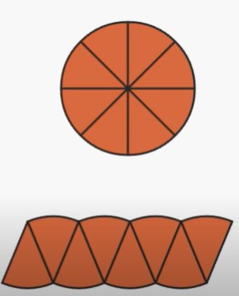
Pour calculer l'aire du disque il faut donc calculer l'aire de cette nouvelle figure, mais elle n'est pas formcément plus facile à calculer
Archimède vas remarquer que plus on augmente les parts qui sont découpé (qui vont devenir plus petites), et bien, la forme obtenue ressemble de plus en plus à un rectangle
2.
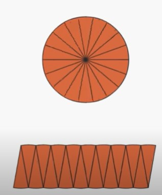
3.
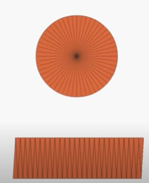
4.
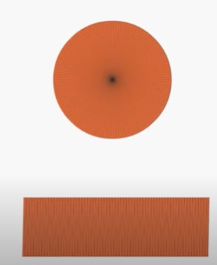
Pour calculer l'aire du disque il faut calculer l'aire du réctangle
Ce qui est égal à largeur fois auteur
La largeur est donc égale au rayon du disque
5.
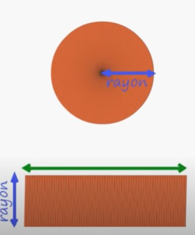
Il a aussi remarqué que les deux plus grands côtés du rectangle ont la même mesure que la circonférance du disque
6.
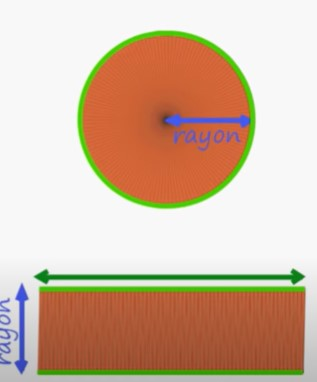
Un des plus grands côté est donc la moitié de la circonférance du disque
7.
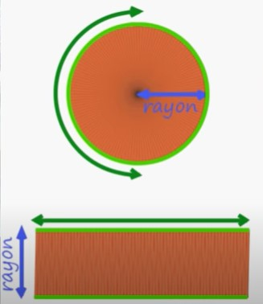
Vus que le diamètre d'un disque est égale à deux fois son rayon
Il faut donc calculer un des plus grand côté du rectangle x pi pour calculer la circonférance
8.
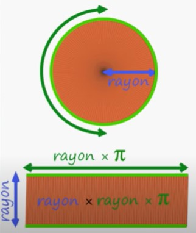
1.
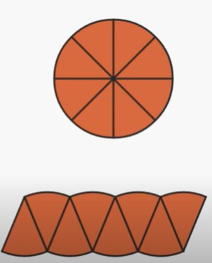Pour calculer l'aire du disque il faut donc calculer l'aire de cette nouvelle figure, mais elle n'est pas formcément plus facile à calculer
Archimède vas remarquer que plus on augmente les parts qui sont découpé (qui vont devenir plus petites), et bien, la forme obtenue ressemble de plus en plus à un rectangle
2.
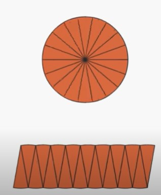3.
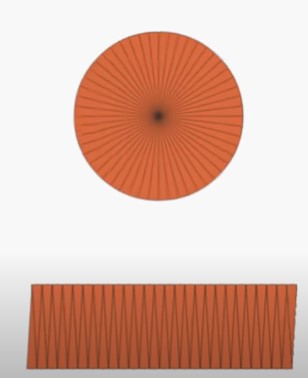4.
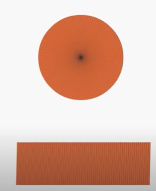Pour calculer l'aire du disque il faut calculer l'aire du réctangle
Ce qui est égal à largeur fois auteur
La largeur est donc égale au rayon du disque
5.
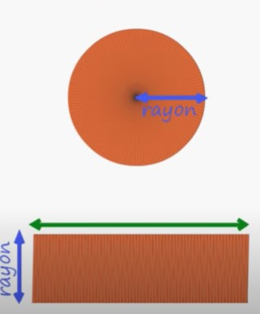
Il a aussi remarqué que les deux plus grands côtés du rectangle ont la même mesure que la circonférance du disque
6.
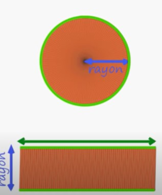
Un des plus grands côté est donc la moitié de la circonférance du disque
7.
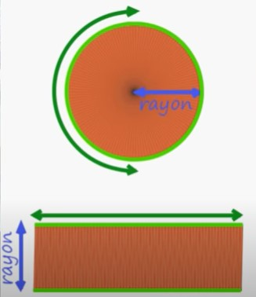
Vus que le diamètre d'un disque est égale à deux fois son rayon
Il faut donc calculer un des plus grand côté du rectangle x pi pour calculer la circonférance
8.
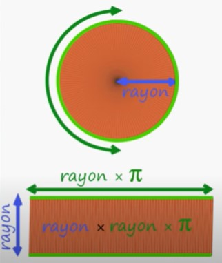
Ce qui est égal à largeur fois auteur
La largeur est donc égale au rayon du disque
5.
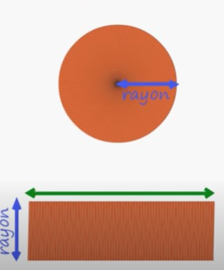Il a aussi remarqué que les deux plus grands côtés du rectangle ont la même mesure que la circonférance du disque
6.
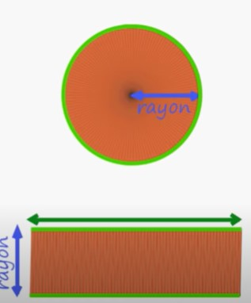Un des plus grands côté est donc la moitié de la circonférance du disque
7.
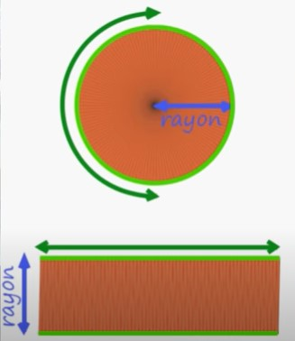Vus que le diamètre d'un disque est égale à deux fois son rayon
Il faut donc calculer un des plus grand côté du rectangle x pi pour calculer la circonférance
8.
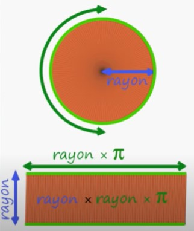
Tous les cercles sont semblables et pour passer d’un cercle à un autre il suffit de connaître le rapport de la similitude. Par suite, pour tout réel positif k, si un cercle possède un rayon r (ou un diamètre d = 2r) k fois plus grand qu’un, alors son périmètre P sera aussi k fois plus grand, ce qui prouve la constance du rapport.
en 2013, on connaissait déjà plus de douze mille milliards de décimales de π, les applications concrètes telles que l'estimation de la circonférence d'un cercle n'ont généralement pas besoin de plus d'une dizaine de chiffres. En 1881, Simon Newcomb relevait ainsi que dix décimales suffisent à calculer la circonférence de la Terre à une fraction de pouce près ; trente décimales, pour obtenir celle de l'univers visible, tel qu'il était appréhendé alors, avec une précision imperceptible au microscope le plus puissant du temps.

Dans les années 1990, la représentation décimale de π tronquée à 39 décimales était estimée suffisante pour calculer la circonférence d'un cercle d'un diamètre du même ordre de grandeur que la taille de l'univers observable avec un degré de précision comparable à celle d'un atome d'hydrogène, compte tenu des estimations alors en vigueur. En 2014, Donald Byrd, chercheur en informatique, revenait sur l'assertion de Newcomb pour l'actualiser à la lumière des avancées de la science depuis 1881 : il en concluait que pour un univers observable de 9,46 x 10 exposant 26 m il suffit d'environ 60 décimales.
Il semble que, très tôt, les mathématiciens aient été convaincus qu'il existait un rapport constant entre le périmètre du cercle et son diamètre, ainsi qu'entre l'aire du disque et le carré du rayon. Des tablettes babyloniennes datant de 2 000 ans av. J.-C. et découvertes en présentent des calculs d'aire conduisant à une valeur de π de 3 + 1/840.
À quoi sert le nombre Pi?
Le nombre Pi a été utilisé depuis l'antiquité, d'abord pour résoudre des problèmes géométriques, puis dans le calcul intégral et enfin à l'apparition de l'informatique, grâce à Pi on peut donc calculer différents rayons et diamètres mais aussi plusieurs aires:
Aire d'un disque
Aire d'une élipse de demi-axes
Aire d'une sphère
Et l'aire latérâle d'un cylindre
On peux aussi calculer des volumes:
Volume d'une boule
Volume d'un cylindre
Volume d'un cône
Conclusion:
Pi est un "nombre" très important dans les mathématiques, il permet de calculer toute sortes de choses comme des aires et des volumes (disque, élipse de demi-axes, sphère, latéralle, boule, cylindre, cône)